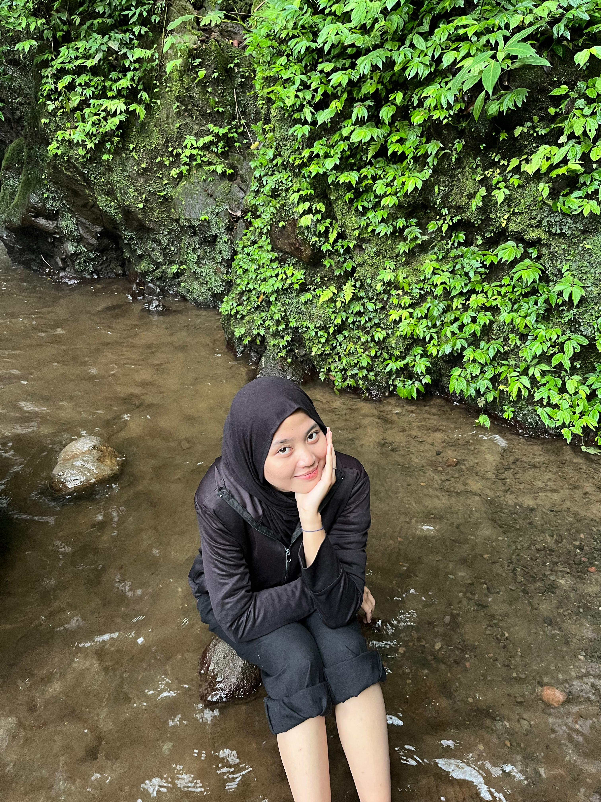

Di Antara Riuh
Dan Rencana Semesta
Sebuah Catatan Tentang Imas Rismayanti
Scroll perlahan ke bawah ↓
Bab 1: Potret Sang Puan
Dia begitu cantik saat tersenyum. Cantik saat marah. Cantik saat tertawa. Bahkan, dia tetap terlihat cantik saat menangis.
Namanya Imas. Sosok yang memberikan warna baru dalam hidupku yang tadinya monokrom. Dia mengenalkanku pada banyak hal: pada rasa tenang di tengah riuhnya dunia, pada rasa cinta yang meneduhkan, sekaligus pada rasa sakit yang ternyata bisa dinikmati.
Dia adalah definisi dari kontradiksi yang indah. Dia bisa sangat baik, pengertian, dan ceria. Namun di saat lain, dia bisa menjadi galak dan cerewet—sebuah sisi yang justru membuatnya terlihat semakin manusiawi dan menarik di mataku.
Dia terlihat begitu kuat, hebat, dan tangguh menjalani hari-harinya. Namun, semakin aku mengenalnya, semakin aku melihat sisi lain yang ia sembunyikan. Di balik topeng ketangguhan itu, aku melihat sosok yang rapuh, yang memilih memendam lukanya sendiri agar dunia tetap melihatnya sebagai "Si Kuat".
Melihatnya, aku seperti rakyat biasa yang bermimpi bisa duduk bersanding dengan seorang putri.
Bab 2: Pertemuan yang Tidak Direncanakan
Barangkali benar, pertemuan kami hanyalah serangkaian kebetulan yang disusun rapi oleh semesta.
Awalnya, hanya pertemuan biasa di sebuah acara organisasi. Saat itu, aku sudah melihat paras cantiknya. Tapi, aku menepisnya. "Ah, ini hanya ketertarikan fisik biasa," pikirku. Lagipula, dia sudah ada yang punya, dan aku pun sedang sibuk menata hati untuk orang lain.
Lalu, semesta mempertemukan kami lagi di sebuah konser. Di antara ribuan manusia, mataku entah kenapa sering mencuri pandang ke arahnya. Apakah ini kebetulan? Atau takdir sedang memberi kode?
Tak lama setelah itu, aku menjadi ketua pelaksana sebuah acara. Dengan modal keberanian, aku mengajaknya terlibat. Interaksi kami semakin intens. Aku tahu statusnya masih milik orang lain, jadi aku menahan diri. Aku bertekad fokus pada diriku sendiri.
Tapi semesta memang suka bercanda. Kami bertemu lagi di acara lain. Dan kali ini, kabar itu datang: dia telah sendiri. Sudah satu bulan berpisah. Teman-teman menyuruhku maju. Tapi aku diam, merenung. "Apakah ini hanya obsesi? Atau benar-benar cinta?"
Bab 3: Jatuh Tanpa Aba-Aba
Seiring berjalannya waktu, jawabannya datang sendiri.
Aku jatuh cinta padanya. Bukan hanya pada paras cantiknya, tapi pada perasaan "hidup kembali" setiap kali berinteraksi dengannya. Aku jatuh cinta pada rasa aman dan nyaman yang tidak bisa diutarakan kata-kata setiap kali berada di dekatnya.
Setiap kali kutatap sorot mata teduhnya, aku jatuh cinta lagi. Lagi, dan lagi. Perasaan ini tumbuh liar tanpa bisa kucegah. Ada hal istimewa dalam caranya tersenyum, dalam tatapan sederhananya yang mampu membuat dunia di sekitarku terasa tenang.
Padahal, aku bertemu dengannya di saat diri ini merasa tidak membutuhkan cinta. Tapi dialah anugerah terindah yang Tuhan selipkan di saat aku tidak mencarinya.
Bab 4: Perang Batin
Namun, mencintainya adalah hal yang penuh risiko. Bagiku, mencintainya adalah anugerah terindah, sekaligus rasa sakit yang nyata.
Sakit, karena aku hanya bisa memilikinya di dalam pikiran. Sakit, karena aku harus menyimpan perasaan ini rapi-rapi, membawanya kemana-mana, menyembunyikannya di balik sikap "biasa aja", sambil berharap dia tidak pernah sadar.
Kadang, kami duduk bersebelahan tanpa menyadari betapa jauhnya jarak hati kami. Dia sibuk menatap langit, sementara aku sibuk menahan detik agar waktu tidak berlalu begitu saja. Aku ingin merangkai setiap momen bersamanya, namun aku takut takdir berkata lain.
Ketakutan terbesar dalam hidupku saat ini sederhana: Aku takut, jika aku bermimpi dan berbicara lantang tentang perasaanku di hadapannya, dia akan menjauh. Aku takut kehilangan kenyamanan obrolan kami. Percayalah, rasa takut itu besar sekali, selalu bertarung hebat dengan harapan untuk memilikinya.
Bab 5: Keinginan Menjadi Rumah
Aku ingin memberikan seluruh dunia agar dia dapat melihatku. Tetapi, aku tidak tahu dunia seperti apa yang dia inginkan. Aku hanya bisa menebak-nebak.
Satu hal yang pasti: Aku ingin menjadi Rumah.
Rumah singgah untuknya, meskipun hanya sementara. Rumah di mana dia merasa aman dan nyaman. Rumah di mana dia bisa melepas topeng "wanita kuat"-nya. Rumah di mana dia boleh marah, boleh kesal, bahkan boleh menangis sepuasnya tanpa perlu berpura-pura tangguh.
Aku ingin dia melihatku, walau hanya sebentar. Aku ingin berada di sisinya, melihat dia tumbuh mengejar mimpi-mimpinya. Aku ingin mengelilingi dunia bersamanya, melihat pemandangan yang sama dengan matanya.
Bab 6: Tentang Tamu dan Tuan Rumah
Aku jatuh, sejatuh-jatuhnya. Bukan karena dia sempurna, tapi karena dunianya menarikku masuk. Dunia yang sibuk, dunia yang riuh, dunia yang memaksanya tegak berdiri.
Tapi aku sadar, aku hanyalah tamu di sana. Aku bukan pusat semestanya, mungkin belum, atau mungkin tidak akan pernah.
Meski begitu, tawaranku masih sama. Aku ingin menjadi 'Rumah'. Tempat dia menanggalkan kostum 'Si Kuat' yang dia pakai seharian. Tempat dia meletakkan topeng 'Si Baik-baik Saja' di depan pintu.
Di sini, dia boleh marah. Dia boleh menangis. Dia boleh lelah.
Egoisku cuma satu: Aku ingin merasakan betapa bahagianya menjadi orang yang dia pilih untuk pulang. Menjadi orang yang dia cari saat dunianya sedang tidak ramah.
Bab 7: Sebuah Pengakuan
I like you, and I want you to know.
Ada perasaan yang tumbuh terlalu dalam untuk terus pura-pura nggak ada. Aku membawanya kemana-mana, menyembunyikannya di balik sikap biasa aja, sambil berharap kamu nggak pernah sadar.
Aku tau bilang ini semuanya berubah atau malah tidak berubah sama sekali. Dua-duanya sama-sama menakutkan. Tapi menyimpan perasaan ini sendirian jauh lebih menyakitkan.
Jadi, kalau setelah ini kamu pergi atau memilih diam, aku akan terima. Seenggaknya aku pernah berani mengakui bahwa aku mencintaimu meski harus menanggung resikonya sendirian.
Epilog: Sampai Semesta Berkata Cukup
Entah dia menerimanya ataupun tidak, aku ingin selalu ada di sampingnya. Aku belum menemukan alasan untuk pergi darinya. Seakan semesta memang mempertemukan kita untuk sesuatu yang lebih besar.
Jika ada yang bertanya, "Sampai kapan kamu akan menunggu dan mencintainya?"
Aku punya jawabannya:
"Entah sampai kapan. Bisa jadi satu detik ke depan, satu menit, satu jam, satu hari, satu minggu, satu bulan, satu tahun, atau selamanya. Mungkin, sampai semesta sendiri yang menyuruhku untuk berhenti."